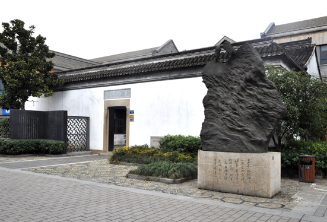

嘉兴市文物保护网 · 市级文物保护单位 · 2014-06-19 · 原文

朱生豪（1912～1944），嘉兴人，著名莎士比亚戏剧翻译家、诗人，是中国最早翻译莎士比亚全集的人之一。他不顾战乱劫难、贫病交加，把译莎工作看成是为民族争气、为祖国争光的英雄事业。历经10年，译稿二度毁于战火，最终译出莎士比亚的31个剧本，为国人走近莎士比亚奉献了毕生心血。他打破了英国牛津版按写作年代编排的次序，分为喜剧、悲剧、史剧、杂剧4类编排，自成体系。译文质量和风格卓具特色，为国内外莎士比亚研究者所公认。其故居位于市区梅湾街禾兴南路73号，民国建筑，坐东朝西，砖木结构、由正屋、厢房和后院组成，建筑面积400平方米。1992年，故居公布为市级文物保护单位。2007年，故居完成修缮布展对外免费开放。